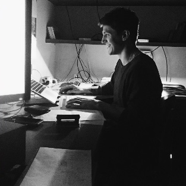
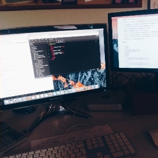

Asi que me dieron un par de dias libre en el trabajo... (que en realidad fue que se me terminó el contrato con la empesa y tengo que esperar una semana para renovarlo). Lo que supuso una cantidad tiempo libre casi inimaginable donde queria emplearlo para aumentar la curva a aprendizaje y descubrimiento de manera intensiva como vengo haciendo desde hace dos meses. Pero que pasó? Un amigo justo venia a Bariloche y surgió un goal que tengo desde principio de año. Volver al sur. Viajar. Hacer algo mínimo que me enriquezca un poco como ser humano. Algo que sea todo mío. Impulsarme. Animarme.

Aventura. Cuando me decidí a venir, sacar un pasaje de avión por primera vez. Dejar de pensar en la plata, que iban a decir mis viejos, donde me iba a alojar, que iba a comer, que tanto frío iba a hacer y demás cosas...empecé a disfutarlo. Dejó de ser una locura para pasar a ser una aventura, mi anhelo y algo que se va viendo sobre la marcha.

Resulto un viaje donde me entusiamé mucho más por programar, diseñar y entre otras cosas interesantes. Pude sacarme algunas dudas de como es trabajar en remoto y para compañías, algunos tips a la hora de tener una entrevista de trabajo y otros detalles.